User agents must also follow the rules described in section 4.7.14
Embedded content, MathML of [auto], in particular the equivalence with
implicit mtext and merror to handle non-conforming MathML markup.
MathML elements have the following box model. The <math> root may have
inline or block display, as suggested in section auto.
Tabular MathML elements have table, table-row and
table-cell display as discussed in section auto.
The <math> and <mtd> elements
generate an anonymous <mrow> MathML box child that contains the boxes of
their children and use the box parameters below to layout this anonymous
<mrow> box.
No line breaking can happen within MathML boxes and the min-content width is
equal to the max-content width, these are simply called the intrinsic width.
Each MathML box has the following parameters:
intrinsic width W.
logical width w, ascent above the origin a and descent below the
origin b. The height is then a + b.
ink ascent A and descent B, corresponding to the exact box enclosing
ink of text and bars within the MathML box.
Figure 1: Generic Box Model for MathML elements
For MathML element containing only text nodes or foreign elements, we assume
that the content is simple enough to determine these values. For example,
in most case, this is just a single text node and w = W.
A MathML element containing only other MathML elements follow special rules to
layout their children at position
(xi, yi) with parameters
Wi, wi, ai, bi, Ai,
Bi. Then as a general rule, its box parameters are given
by taking the union of child boxes, that is:
w = max1 ≤ i ≤ n (xi + wi) −
max1 ≤ i ≤ n xi
W = max1 ≤ i ≤ n (xi + Wi) −
max1 ≤ i ≤ n xi
a = max1 ≤ i ≤ n (ai − yi)
b = max1 ≤ i ≤ n (bi + yi)
A = max1 ≤ i ≤ n (Ai − yi)
B = max1 ≤ i ≤ n (Bi + yi)
Note that the schemas in this document are drawn assuming left-to-right
directionality. If the CSS direction is set to right-to-left, then the
elements should be layout by making the x-axis pointing from right-to-left.
In this document, we use the terminology of [auto]: “leading”
means “left” in right-to-left and “right” in right-to-left mode, while
“trailing” means “right” in right-to-left and “left” in right-to-left
mode.
The MathItalicsCorrectionInfo table contains the italic
correction of some glyphs, which provides a measure of how slanted the
glyphs are (see figure auto). The
MathTopAccentAttachment table also contains a reference
points that is used for the horizontal positioning of glyphs as an accent
(see figure auto). In later sections, we
generalize this by claiming that all MathML boxes have italic correction
and top accent attachment values. The values for glyphs are used to try and
extend to token elements or to special boxes that do not change child metrics.
Otherwise fallback values are used: 0 for italic correction and half
the width of the box for top accent attachment.
Figure 2: Examples of italic correction for italic f and large integralFigure 3: Example of top accent attachment for a circumflex accent
The present document assumes that W, w, a, b, A, B, italic correction
and top accent attachment are nonnegative values. If computations result
in negative values, then they must be interpreted as being zero.
Note that some MathML elements such as mspace or mpadded may set box
dimensions to negative values.
Layout Steps
For compatibility with HTML5 rendering, the MathML layout is performed in two
independent steps:
In the first step, we determine the intrinsic width W of MathML boxes.
To do so we just follow the description given in this document for each
MathML box. We rely on vertical positions x as well as values for
italic correction and top accent attachment. However, we ignore any vertical
positioning or metrics.
In the second step, we do the final layout of MathML boxes following
the description given in this document. We obtain all the box metrics,
including the actual width w, vertical metrics a, b, A, B and
vertical positions y.
In order to perform the first step independently of the second one, the
horizontal metrics must not depend on the vertical metrics. As described in
section auto, this adds some restrictions on the possible pseudo-units
of the mpadded element. As indicated in section auto,
the width of size variants or of the glyph assembly used for vertical stretchy
operators may depend on the target size to cover. Taking the maximum widths
for all these size variants or for the glyph assembly during the first step
makes the intrinsic width independent of the target size but may lead to a
small over-estimation.
Each of this step is done recursively: the metrics of a given MathML box
are determined from those of the child boxes. User agents must implement
the “Exception for embellished operators” described in [auto].
This means that the actual stretching of operators described in section
auto may be “delayed” until we reach the top of its embellished
operator subtree. We then have to apply the current operation again
to this embellished operator (intrinsic width determination or layout).
Fortunately, such embellished operator subtrees are not deep in practice.
This document does not require support for operator stretching in table cells.
The “delayed” stretching of all operators must then be performed when we
arrive at the anonymous <mrow> child of <math> and <mtd>
elements.
That way, the intrinsic width of this anonymous <mrow> is well-defined
for the layout of mtable elements and of the containers of the
<math> element. Similarly, the final layout of this anonymous
<mrow> is already done when we want to perform the one of its ancestors.
Token Elements
Identifier <mi>
An mi element represents a symbolic name or arbitrary text that should be rendered as an identifier. Identifiers can include variables, function names, and symbolic constants.
In general, the mi element must be treated the same as the mtext
element. However, when the mathvariant on an mi element is
none and the mi content is made of a single character then the
element must behave as if mathvariant was actually set to italic.
Number <mn>
An mn element represents a "numeric literal" or other data that should be rendered as a numeric literal. Generally speaking, a numeric literal is a sequence of digits, perhaps including a decimal point, representing an unsigned integer or real number.
For the layout algorithm described in this document, the
mn element must be treated the same as the mtext element.
Operator, Fence, Separator or Accent <mo>
An mo element represents an operator or anything that should be rendered as an operator. In general, the notational conventions for mathematical operators are quite complicated, and therefore MathML provides a relatively sophisticated mechanism for specifying the rendering behavior of an mo element. As a consequence, in MathML the list of things that should "render as an operator" includes a number of notations that are not mathematical operators in the ordinary sense. Besides ordinary operators with infix, prefix, or postfix forms, these include fence characters such as braces, parentheses, and "absolute value" bars; separators such as comma and semicolon; and mathematical accents such as a bar or tilde over a symbol. We will use the term "operator" in this chapter to refer to operators in this broad sense.
Many properties of an mo element can be specified via attribute on
that element. The default value of the form of an mo element is
obtained as described in section “Default value of the form attribute” of
[auto]. From the form and the text content, we can deduce other
default values from the operator dictionary or use the fallback values given
in “Dictionary-based attributes” of [auto].
The leading space lspace and trailing space rspace must be added on
each side of the mo element (or its outermost embellished ancestor).
In most cases, the mo element is treated as an mtext element.
However, when an mo element with a single character must be displayed as
a large operator then instead we use the MathVariants
table to try and find a glyph of height at least
DisplayOperatorMinHeight
(figure auto). If none is found, we fallback to the
largest one. Because this parameter does not always give
the best size, user agents may also use the following heuristic: ensure
that the large variant height is at least 2 times as large as the base height
for integrals and √2 times as large as the base height for other
operators.
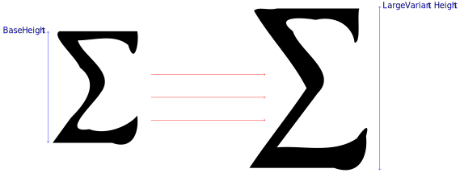
Figure 4: Base and displaystyle sizes of the summation symbol
When an mo element with a single character must be displayed as a
horizontal or vertical
operator then instead of displaying the normal character we use
the MathVariants table to try and find a glyph
that has at least the desired size or an assembly from several glyphs
to cover at least the desired size
(figure auto). The rules for vertical stretching
are a bit more complicated and are described in section
“Vertical Stretching Rules” of [auto]. If the operator has property
symmetric="true", it must be stretched symmetrically with respect to
the math axis, which is given by the AxisHeight value.
Figure auto compares the symmetric
and non-symmetric stretching.
The size variant or construction used for vertical stretchy operators will
depend on the target size to cover. To determine the intrinsic
width W of the operator, we consider the maximum of all possible widths
for the base size, size variants and construction available for the given
operator. It is assumed that the width of the
operator is almost independent of the stretch size, which is the case in
practice for most math fonts and operators.
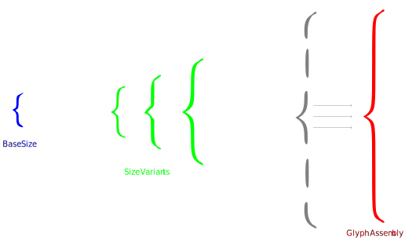
Figure 5: Base size, size variants and glyph assembly for the left braceFigure 6: Symmetric and non-symmetric stretching of vertical operators
See section auto for details about how to treat “embellished ancestor”,
and how decide when to display operators larger or when to stretch them
vertically & horizontally.
Text <mtext>
An mtext element is used to represent arbitrary text that should be rendered as itself. In general, the mtext element is intended to denote commentary text.
In most cases the <mtext> element contains some text that is laid out
without line
breaks using complex text layout [auto]. It is assumed that we can measure
the ink ascent & descent, logical ascent & descent and advance width of
the text frame and use these values for the MathML box of the <mtext>
element.
If the trailing glyph of the text content has an entry in the
MathItalicsCorrectionInfo table then the specified
value is used as the italic correction.
User agents may subtract the advance width from the abscissa of the trailing
ink edge as a heuristic value for the italic correction of the <mtext>
element when it is not specified in the
MathItalicsCorrectionInfo table.
If the text content is made of a single glyph and this glyph
has an entry in the MathTopAccentAttachment table
then the specified value is used as the top accent attachment of the
<mtext> element.
If the CSS direction on the <mtext> element is set to right-to-left
then user agents must enable the rtlm OpenType feature on text nodes
unless it contradicts what the page author has specified with the
font-feature-settings CSS property.
If <mtext> is used at a non-zero scriptlevel then user agents must
enable the ssty OpenType feature on text nodes unless it contradicts
what the page author has specified with the font-feature-settings
CSS property.
In the most general case, the <mtext> element may contain text with line
breaks or arbitrary HTML5 phrasing elements. We assume that we can still
determine logical dimensions
and max-content width of the text content and use it for both the logical and
ink values of the <mtext> element. The italic correction and
top accent attachment are assigned the fallback values indicated in section
auto
Space <mspace/>
An mspace empty element represents a blank space of any desired size, as set by its attributes.
The mspace element is laid out as shown on figure
auto.
The logical box is determined by the height, depth and width
attributes defined in [auto]. The ink box matches the logical box.
The linebreak attribute on the <mspace/> element must be ignored.
Figure 7: Box model for the mspace element
String Literal <ms>
The ms element is used to represent "string literals" in expressions meant to be interpreted by computer algebra systems or other systems containing "programming languages".
In general, ms must be treated the same as the mtext
element except that quotes are automatically added around its content.
The user agents may implement the lquote or rquote attributes
with the following style in the user agent stylesheet as suggested in section
auto:
An mrow element is used to group together any number of sub-expressions, usually consisting of one or more mo elements acting as "operators" on one or more other expressions that are their "operands".
The dir attribute must be mapped to the direction CSS property.
The current version of this document does not define any linebreaking algorithm
for the mrow element, user agents may just ignore linebreaking rules.
User agents must follow the rules for inferred mrows described in
[auto]. For example, to layout
<msqrt>child_1 child_2 child_3 ...</msqrt>, one must follow the layout
rules described for msqrt in section auto using
the box of <mrow>child_1 child_2 child_3 ... child_N</mrow> as the base.
The <mrow>child_1 child_2 child_3 ... child_N</mrow> element is laid
out as show on figure auto. The boxes of child1, child2, … childN are put in a horizontal row
one after the other with all their baselines aligned. As a consequence of this
and of child box models, graphical elements such as fraction bars
or symmetric stretchy operators will also be
aligned along the math axis when the
AxisHeight is unchanged (e.g. in the typical case
where the math font is unchanged).
As indicated in section auto, we generally do not add special spacing
around the children. For example, the leading and trailing spacing is already
included in the box metrics of embellished operators. The only exception is
for the italic correction: when a “slanted” child is
followed by a “straight” child, then an horizontal
space corresponding to the italic correction of the “slanted” child is added
between the two children [auto]. The italic correction of the
last child is also added after that child when it is “slanted” and when
the mrow has more than one child. In this document, we interpret
“slanted” as a child that is not an operator with
largeop="true" (or an embellished operator whose mo element core
has largeop="true") and has nonzero italic correction and “straight”
as “non-slanted”.
When the mrow element contains only one child then the previous
description implies that the box metrics of the mrow is the same as
the one of its unique child. As indicated in section auto, we thus
use the italic correction and top accent attachment of the child as the
corresponding values of the mrow box.
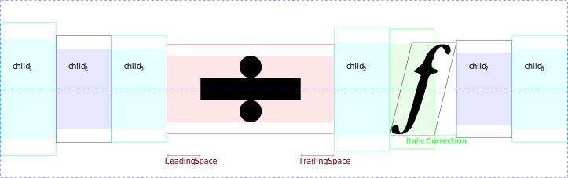
Figure 8: Box model for the mrow element
Fractions <mfrac>
The mfrac element is used for fractions. It can also be used to mark up fraction-like objects such as binomial coefficients and Legendre symbols. The syntax for mfrac is
<mfrac> numerator denominator </mfrac>
The displaystyle and scriptlevel changes be achieved with the
following style in the user agent stylesheet as suggested in section
auto:
The axis of the mfrac element is always given by
AxisHeight.
The default line thickness is given by
FractionRuleThickness
Use the linethickness attribute [auto] to determine the
actual thickness of the fraction bar. A percent or unitless length is
interpreted as a multiple of the default rule thickness.
The color and visibility of the fraction bar must honor the values given by the
color and visibility CSS properties on the mfrac element.
If the actual line thickness is nonzero, the mfrac element is laid out as
shown on figure auto.
The width is given by the maximum width of the
numerator and denominator and the numerator and denominator are horizontally
centered. A fraction bar with the actual thickness is drawn centered on the
axis height. The numerator and denominator are shifted
up and down using the values FractionNumeratorShiftUp,
FractionDenominatorShiftDown in inline style and
FractionNumeratorDisplayStyleShiftUp,
FractionDenominatorDisplayStyleShiftDown
in display style.
If necessary, these shift values are increased to ensure that the gaps between
the numerator/denominator and fraction bar satisfy the minimal values provided
by FractionDenominatorGapMin and
FractionNumeratorGapMin in inline style and
FractionDenominatorDisplayStyleGapMin and
FractionNumeratorDisplayStyleGapMin
in display style.
Figure 9: Box model for the mfrac element
If the actual line thickness is zero,
the mfrac element is instead laid out as
shown on figure auto.
The gap between the top and bottom boxes
is equally split around the axis height. The relevant shift values are now
StackTopShiftUp,
StackBottomShiftDown in inline style and
StackTopDisplayStyleShiftUp,
StackBottomDisplayStyleShiftDown in display style.
If necessary, the two shift values are increased by a same value to ensure
the gap between the top and bottom boxes satisfy the values provided by
by StackGapMin in inline style and
StackDisplayStyleGapMin in display style.
Figure 10: Box model for the mfrac element without bar
In order to prevent the fraction bar to be confused with other items around
the fraction (e.g. minus sign or the bar of another fraction), a 1 pixel space
must actually be added on each side of the mfrac element.
If the numerator is an embellished operator and the mfrac element is the
outermost element in this embellished operator hierarchy then the operator
leading and trailing spaces must be added around the fraction.
Radicals <msqrt>, <mroot>
The MathML specification describes radicals as follows [auto]:
These elements construct radicals. The msqrt element is used for square
roots, while the mroot element is used to draw radicals with indices,
e.g. a cube root. The syntax for these elements is:
<msqrt> base </msqrt>
<mroot> base index </mroot>
The displaystyle and scriptlevel changes be achieved with the
following style in the user agent stylesheet as suggested in section
auto:
The line thickness of the overbar is given by
RadicalRuleThickness.
The gap between the overbar and base is given by
RadicalVerticalGap
in inline style and RadicalDisplayStyleVerticalGap
in display style.
The ascent above the overbase is given by RadicalExtraAscender.
The surd is drawn by trying to vertically stretch the character
U+221A SQUARE ROOT
to at least the sum of the ink height of the base, the radical gap and the
radical rule thickness. If the CSS direction is set to right-to-left,
then the surd is actually drawn from the glyph obtained by mirroring
U+221A SQUARE ROOT via the rtlm OpenType feature.
The color and visibility of the surd and overbar must honor the values given by
the color and visibility CSS properties on the msqrt element.
The msqrt element is laid out as shown on figure
auto.
The width is given by the sum of the width of the surd and of the base.
The baseline of the square root matches the baseline of the base.
The ink box is determined from the ink boxes of the surd and base while the
logical box takes into account the extra ascender
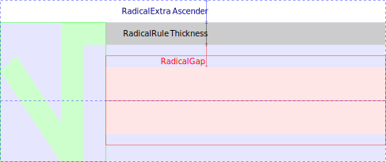
Figure 11: Box model for the msqrt element
The mroot element is laid out as shown on figure auto.
We start by ignoring the root index and we layout the base and surd as
shown on figure auto to obtain a box B.
The horizontal metrics of the mroot element are obtained by putting
RadicalKernBeforeDegree
before the root index, then placing the root index, then a kerning
of RadicalKernAfterDegree
after the root index and finally placing B. In general
the kerning before the root index is positive while the kerning after it is
negative,
which means that the root element will have some space before it and that the
root index will overlap the surd.
For the vertical metrics of the mroot element, we first take the baseline
of B as the baseline. We graduate the ink height of B with a linear
scale going from the bottom at coordinate 0 to the top at coordinate 1.
Then the ink bottom of the root index will
be vertically positioned at coordinate
RadicalDegreeBottomRaisePercent.
Finally, we take into consideration the box of the root index and B to deduce
the metrics for the whole box of the mroot element.
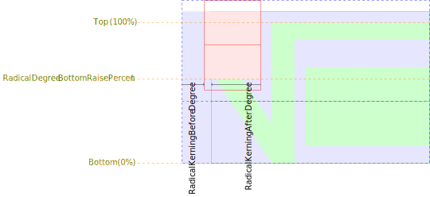
Figure 12: Box model for the mroot element
Style Change <mstyle>
The mstyle element is used to make style changes that affect the
rendering of its contents.
For the layout algorithm described in this document, the
mstyle element must be treated the same as the mrow element.
However, some attributes on the mstyle element must be mapped to CSS
properties as indicated in section auto.
All the other mstyle
attributes not defined in this document must be ignored.
Error Message <merror>
The merror element displays its contents as an ”error message”. This might be done, for example, by displaying the contents in red, flashing the
contents, or changing the background color.
For the layout algorithm described in this document, the
merror element must be treated the same as the mrow element.
The user agent stylesheet must set some CSS properties on the merror
element in order to highlight the error.
As suggested in section auto, this can for example be achieved
with the rule:
An mpadded element renders the same as its child content, but with the
size of the child’s bounding box and the relative positioning point of its
content modified according to mpadded’s attributes.
See [auto] for how the metrics of mpadded element are determined.
Note that pseudo-units allows horizontal metrics to depend on vertical metrics,
for example width="2height" which can be problematic to determine
intrinsic widths. Hence in the present document, if
the value of the width and lspace attributes contains
”height” or ”depth” pseudo-units, then they must be ignored.
The mpadded element is laid out as shown on figure
auto.
The height, depth and width of the content in [auto] corresponds to
the logical box of the content. The content of the mpadded element is
positioned from the origin of the mpadded element as follows: We shift
the content
forward by a distance of lspace and shift it upward by a distance of
voffset. The logical metrics of the mpadded element are given by the
height, depth and width of the mpadded element described in
[auto]. The ink metrics of the mpadded element match their logical
metrics.
Figure 13: Box model for the mpadded element
Making Sub-Expressions Invisible <mphantom>
The mphantom element renders invisibly, but with the same size and other dimensions, including baseline position, that its contents would have if they were rendered normally.
For the layout algorithm described in this document, the
mphantom element must be treated the same as the mrow element.
The user agent stylesheet must set some CSS properties on the mphantom
element in order to hide its content.
As suggested in section auto, this can for example be achieved
with the rule:
mphantom {
visibility: hidden;
}
Enclose Expression Inside Notation <menclose>
The menclose element renders its content inside the enclosing notation specified by its notation attribute.
The color and visibility of the menclose notations must honor the values
given by the color and visibility CSS properties on the
menclose element.
Based on [auto] [auto], we use the notation ξ8
from the TeXBook to denote the default rule thickness and use
3ξ8 for gaps.
We actually let ξ8 be OverbarRuleThickness.
Note that contrary to what is done in general and unless specified otherwise,
the x-axis direction of notations is assumed to be independent of the CSS
direction.
In order to determine the metrics of the menclose notation, we
compute each notation individually and take the union of the metrics:
The left notation is drawn by putting a vertical bar of thickness
ξ8 on the left of the content of the menclose element.
The length of the bar is obtained by extending the height of the content
with OverbarVerticalGap plus
OverbarRuleThickness above
and UnderbarVerticalGap plus
UnderbarRuleThickness below.
The gap between the bar and the content is 3ξ8.
The logical box is obtained by adding some space of width
ξ8 on the left of the bar. See figure auto.
Figure 14: Box model for the left
notation of the menclose element
The right notation is drawn the same as the left notation,
but with the vertical bar placed on the right.
The top notation is drawn by putting an overbar of thickness
OverbarRuleThickness
over the content of the menclose element.
The length of the bar is obtained by extending the width of the content
with 4ξ8 on each side.
The gap between the overbar and the content is
OverbarVerticalGap.
The logical box is obtained by adding some space of height
OverbarExtraAscender above the bar.
See figure auto.
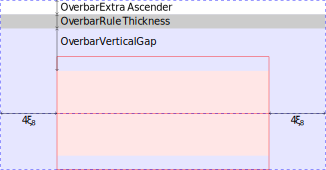
Figure 15: Box model for the top
notation of the menclose element
The bottom notation is drawn the same as the top notation,
but with the vertical bar placed below the content and using parameters
UnderbarRuleThickness,
UnderbarVerticalGap.
and UnderExtraDescender.
The box notation is treated as equivalent to
left right top bottom.
To draw the roundedbox notation, we consider the box
obtained by expanding the ink box by 7ξ8 / 2 on each side.
Using SVG terminology, we draw a rounded rectangle on this expanded box
with parameters rx, ry and stroke-width set to 3ξ8
[auto]. To obtain the logical box we again add a space of ξ8 on
each side of the ink box. See figure auto.
Figure 16: Box model for the roundedbox
notation of the menclose element
The actuarial notation is treated as equivalent to right top.
The madruwb notation is treated as equivalent to
right bottom.
The horizontalstrike notation is drawn with an horizontal bar
of thickness ξ8 and
vertically centered inside the menclose content.
This does not change the box metrics.
See figure auto.
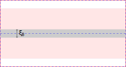
Figure 17: Box model for the horizontalstrike
notation of the menclose element
The verticalstrike notation is drawn the same as
horizontalstrike but with a vertical bar
of thickness ξ8 and horizontally centered inside the menclose
content.
The updiagonalstrike notation is drawn with a line
of thickness ξ8 going from the bottom left corner of the menclose
content to its top right corner. Using SVG terminology, the
stroke-linecap of the line is butt [auto].
As an approximation, the ink box
is set equal to the logical box and obtained by increasing the original box
from each side by ξ8 / 2.
See figure auto.
Figure 18: Box model for the updiagonalstrike
notation of the menclose element
The downdiagonalstrike notation is drawn as an
updiagonalstrike
but the line strike goes from the top left corner to the bottom right corner.
Using SVG terminology, the
stroke-linecap of the line is butt [auto].
The longdiv notation is drawn similarly to the msqrt element
(figure auto). It is independent of CSS
direction and U+221A SQUARE ROOT is replaced with
U+0029 RIGHT PARENTHESIS. The rule thickness is ξ8,
the gap between content and overbar is 3ξ8 and the extra ascender
is ξ8.
To draw the circle notation, we first consider the ink box of
width w and height h. We draw the ellipse
of axes the axes of symmetry of this ink box, of radii
w * √2 / 2
and
h * √2 / 2
and of thickness ξ8.
We ensure that the logical box also has space ξ8 around each side
of the ellipse ink box.
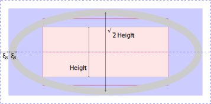
Figure 19: Box model for the circle
notation of the menclose element
This document does define any layout algorithm for other menclose
notations. User agents may ignore them.
Script and Limit Schemata
Subscripts and Superscripts <msub>, <msup>,
<msubsup>
The msub element attaches a subscript to a base using the syntax
<msub> base subscript </msub>
The msup element attaches a superscript to a base using the syntax
<msup> base superscript </msup>
The msubsup element is used to attach both a subscript and superscript to
a base expression.
<msubsup> base subscript superscript </msubsup>
As suggested in section section auto, the displaystyle and
scriptlevel changes be achieved with the
following style in the user agent stylesheet:
The msub element is laid out as shown on figure auto.
The baseline is the baseline of the base while the baseline of the script is
shifted down by SubShift, which is the minimal value honoring the
following conditions:
SubShift is at least SubscriptShiftDown.
The top of the subscript SubTop with respect to the baseline
is not above SubscriptTopMax.
The drop SubscriptBaselineDrop from the bottom of the base to
the baseline of the script is at least
SubscriptBaselineDropMin.
When determining
the logical box, a space of width SpaceAfterScript
is added after
the subscript. By default, the leading edge of the subscript is aligned with
the trailing edge of the base. However, if the base is an operator with
largeop="true" (or an embellished operator whose mo element core
has largeop="true") the subscript is horizontally shifted backward
by the italic correction of the base.
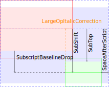
Figure 20: Box model for the msub element
The msup element is laid out as shown on figure auto.
The baseline is the baseline of the base while the baseline of the script is
shifted up by SuperShift, which is the minimal value honoring the
following conditions:
SuperShift is at least
SuperscriptShiftUpCramped if the msup element is
cramped (section auto) or at least
SuperscriptShiftUp otherwise.
The bottom of the superscript SuperBottom with respect to the
baseline is not below SuperscriptBottomMin.
The drop SuperscriptBaselineDrop from the top of the base to
the baseline of the script is at most SuperscriptBaselineDropMax.
When determining
the logical box, a space of width SpaceAfterScript
is added after
the superscript. By default, the leading edge of the superscript is aligned with
the trailing edge of the base and shifted forward by the italic correction
of the base, except if the base is an operator with
largeop="true" (or an embellished operator whose mo element core
has largeop="true").
Figure 21: Box model for the msup element
The msubsup element is laid out as shown on figure
auto.
The baseline is the baseline of the base while the baseline of the script is
shifted down by SubShift and the superscript is shifted up by
SuperShift which is initially set to the minimal values honoring the
following conditions:
SubShift is at least
SuperscriptShiftUpCramped if the msup element is
cramped (section auto) or at least
SuperscriptShiftUp otherwise.
The top of the subscript SubTop with respect to the baseline
is not above SubscriptTopMax.
The drop SuperscriptBaselineDrop from the top of the base to
the baseline of the superscript is at most SuperscriptBaselineDropMax.
SubShift is at least
SuperscriptShiftUpCramped if the msup element is
cramped (section auto) or at least
SuperscriptShiftUp otherwise.
The bottom of the superscript SuperBottom with respect to the
baseline is not below SuperscriptBottomMin.
The drop SubscriptBaselineDrop from
the bottom of the base to the the baseline of the subscript is at least
SubscriptBaselineDropMin.
We then increase the gap SubSuperGap between the bottom of the superscript
and the top of the subscript to ensure it is at least
SubSuperscriptGapMin:
This is first done by continuing to shift the superscript up as long as the
SuperBottom does not exceed
SuperscriptBottomMaxWithSubscript
and next by continuing to shift the subscript down.
When determining
the logical box, a space of width SpaceAfterScript
is added after
each script. By default the leading edges of the scripts are aligned with
the trailing edge and either the superscript is shifted forward by the italic
correction of the base. However, if the base is an operator with
largeop="true" (or an embellished operator whose mo element core
has largeop="true") then instead the subscript is shifted forward by the
italic correction of the base.
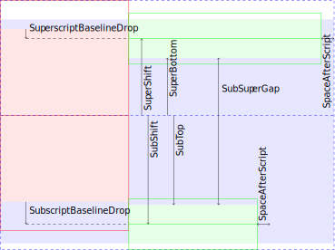
Figure 22: Box model for the msubsup element
Underscripts and Overscripts <munder>, <mover>,
<munderover>
The munder element attaches an accent or limit placed under a base using
the syntax
<munder> base underscript </munder>
If base is an operator with movablelimits="true" (or an embellished
operator whose mo element core has movablelimits="true"), and
displaystyle="false", then underscript is drawn in a subscript position.
In this case, the accentunder attribute is ignored. […]
The mover element attaches an accent or limit placed over a base using
the syntax
<mover> base overscript </mover>
If base is an operator with movablelimits="true" (or an embellished
operator whose mo element core has movablelimits="true"), and
displaystyle="false", then overscript is drawn in a superscript position.
In this case, the accent attribute is ignored.
The munderover element attaches accents or limits placed both over and
under a base using the syntax
<munderover> base underscript overscript </munderover>
If base is an operator with movablelimits="true" (or an embellished
operator whose mo element core has movablelimits="true"), and
displaystyle="false", then underscript and overscript are drawn in a
subscript and superscript position, respectively. In this case, the
accentunder and accent attributes are ignored.
User Agents must perform the scriptlevel increment by checking
the appropriate accent or accentunder value, which can not be done
using only CSS. However, displaystyle changes can be achieved with the
following style in the user agent stylesheet, as suggested in section
auto:
In cases where underscript and overscript are drawn as subscript and
superscript position then the layout algorithm is the same as section
auto. Note that in that case,
accent or accentunder are ignored so the scriptlevel increment is
always performed.
The general layout of munderover is shown on figure
auto.
The overscript is placed above the base, the underscript below the base
and by default are aligned with respect to their geometrical center.
If the overscript is an accent and has a TopAccentAttachment
value, then this value may be used to horizontally align the accent instead
of its geometrical center.
OverShift is the distance between the top ink
of the base and the baseline of the overscript, OverGap is the distance
between the top ink of the base and the bottom ink of the overscript,
OverExtraAscender is extra space to add above the overscript when
determining the logical box. UnderShift, UnderGap and
UnderExtraDescender are defined similarly for the underscripts.
We distinguish three cases:
If the base is an operator with largeop="true"
(or an embellished operator whose mo element core has
largeop="true") then ensure that OverGap is at least
UpperLimitGapMin, that OverShift is at least
UpperLimitBaselineRiseMin that UnderGap is at
least
LowerLimitGapMin, that UnderShift is at least
LowerLimitBaselineDropMin.
OverExtraAscender and
UnderExtraDescender are zero. The
underscript is shifted backward by half the italic correction of the base.
The overscript is shifted forward by half the italic correction of the base.
If the base is a horizontal operator with stretchy="true"
(or a horizontal embellished operator whose mo element core has
stretchy="true"). Then ensure that OverGap is at least
StretchStackGapBelowMin, that OverShift is at
least
StretchStackTopShiftUp that UnderGap is at least
StretchStackGapAboveMin,
that UnderShift is at least
StretchStackBottomShiftDown.
OverExtraAscender and
UnderExtraDescender are zero.
In other cases we proceed as follows.
There are not any specific conditions to satisfy on OverShift or
UnderShift.
OverExtraAscender and
OverExtraAscender are respectively set to
OverbarExtraAscender
and UnderExtraDescender.
We set UnderGap to UnderbarVerticalGap
if the underscript is not an accent and to zero otherwise.
We set OverGap to OverbarVerticalGap
if the overscript is not an accent and generally to zero otherwise.
However, if overscript is an accent and if the base ascent is at most
AccentBaseHeight then we actually set OverGap to
their nonnegative difference.
Remark: For accent overscripts and bases with ascents that are at most
AccentBaseHeight, the rule from
[auto] [auto] is actually to align the baselines of the
overscripts and of the bases. This assumes that accent glyphs are designed in
such a way that their ink bottoms are more or less
AccentBaseHeight above their baselines. Hence, the
previous rule will guarantee that all the overscript bottoms are aligned while
still avoiding collision with the bases. However, MathML can have arbitrary
accent overscripts so we provide a more general and simpler rule above: Ensure
that the bottom of overscript is at least
AccentBaseHeight above the baseline of the base.
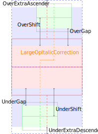
Figure 23: Box model for the munderover element
The layout of munder and mover is the same as the one of
munderover except that one script and its corresponding extra space
are ignored.
Prescripts and Tensor Indices <mmultiscripts>
Presubscripts and tensor notations are represented by a single element,
mmultiscripts, using the syntax:
<mmultiscripts>
base
(subscript superscript)*
[ <mprescripts/> (presubscript presuperscript)* ]
</mmultiscripts>
This element allows the representation of any number of vertically-aligned
pairs of subscripts and superscripts, attached to one base expression. It
supports both postscripts and prescripts. Missing scripts can be represented
by the empty element none.
The displaystyle and scriptlevel changes be achieved with the
following style in the user agent stylesheet as suggested in section
auto:
Any layout for mmultiscripts is acceptable as long as it follows
the condition of the MathML 3 specification [auto] and is consistent
with section auto for mmultiscripts
contructions that are equivalent to msubsup. Here is a possible algorithm
that is represented on figure auto.
Determine the vertical shifts for each subscript/superscript pair
using the algorithm for msub (if the superscript is none),
msup (if the subscript is none) or msubsup
(if none of the scripts are none) or otherwise use shifts of zero
(if both scripts of the pair are none). When placing the scripts,
use the maximum of the subscript shift for all subscript and
the maximum of the superscript shift for all superscripts.
For the horizontal layout of postscripts, use the trailing edge of the
base or of the previous pair as the leading edge of the current pair.
For each pair, apply the same italic correction described for
msubsup in section auto.
Apply the same italic corrections for all these postscripts.
For the horizontal layout of prescripts, use the leading edge of the
base or of next pair as the trailing edge of the current pair. Do not apply
any italic correction for prescripts.
Figure 24: Box model for the mmultiscripts element
Tabular Math
Matrices, arrays and other table-like mathematical notation are marked up using
mtable, mtr, mlabeledtr and mtd elements. These
elements are similar to the table, tr and td elements of HTML, except that they
provide specialized attributes for the fine layout control necessary for
commutative diagrams, block matrices and so on.
In the present document, we restrict ourselves to a minimal implementation
compatible with HTML tables. First the mtable element must be treated as
a HTML table and by [auto], mtable must accept a
displaystyle attribute with default value false. To implement that,
one may rely on the following rules for the user agent stylesheet as
suggested in section auto:
By default, user agents must align the vertical center of the table on the
math axis, which is provided by the AxisHeight value.
User agents may also support non-default align attribute values.
The mtr and mlabeledtr elements must be treated as HTML table rows
and the label of mlabeledtr element must be hidden by default.
The default value of rowalign must be baseline.
One may rely on the following rules for the user agent stylesheet
as suggested in section auto:
Finally, the mtd elements must be treated as a HTML table cell.
The default value of rowalign must be baseline and
the default value of colulmnalign must be center.
User agents may also try to approximate the default rowspacing and
columnspacing between cells. This can be achieved with the following CSS:
The mtd element must also support the columnspan (sic) and
rowspan attributes. This can be implemented the same way as
the HTML colspan and rowspan attributes.
Enlivening Expressions
To provide a mechanism for binding actions to expressions, MathML provides the
maction element. This element accepts any number of sub-expressions as
arguments and the type of action that should happen is controlled by the
actiontype attribute. Only three actions are predefined by MathML, but the list
of possible actions is open.
User agents must display at most one of the child of a maction element.
User agents must determine the visible child as follows:
If actiontype is toggle and the selection attribute
(with default value 1) points to a valid child index
between 1 and the number of children, then use the specified child.
If the actiontype is statusline or tooltip then
use the first child (if any).
Otherwise, the visible child is undetermined.
For the layout algorithm described in this document, the
maction element must be treated the same as the mrow element
containing its visible child. If it is undetermined,
the user agent may treat the maction element as an
empty mrow element or as an merror element with some relevant error
message indicating invalid or unsupported markup.
User agents may additionally provide a complete implementation of the
toggle actiontype updating the value of the selection attribute
after the maction element receives a click event.
For statusline and tooltip attributes, they may also display the
second child in some way when the maction element receives a hover
event. This document does not define how these DOM events are propagated
or how to change the default behavior.
Given the similarity with the semantics element
described in section auto, it is
suggested to share the implementation of semantics and maction.
Semantics and Presentation
The semantics element is the container element that associates
annotations with a MathML expression. The semantics element has as its first
child the expression to be annotated. Any MathML expression may appear as the
first child of the semantics element. Subsequent annotation and annotation-xml
children enclose the annotations. An annotation represented in XML is enclosed
in an annotation-xml element. An annotation represented in character data
is enclosed in an annotation element.
User agents must display at most one of the child of a semantics element.
For example, they may always display the first child (if any) or may use this
more advanced algorithm to determine a visible child:
If the semantics element has a first child that is any of the
MathML elements (other than annotation and annotation-xml)
whose rendering is described in this document then use it as the visible
child and stop.
Otherwise, check the children of the semantics element in the DOM
order to try and find the first child that is
Either an annotation without any src attribute.
Or an annotation-xml without any src attribute and
with an encoding attribute that has value
"application/mathml-presentation+xml",
"MathML-Presentation",
"image/svg+xml",
"SVG1.1",
"application/xhtml+xml" or
"text/html".
Otherwise, fallback to the first child (if any).
Otherwise, the semantics element is empty and the visible child is
undetermined.
For the layout algorithm described in this document, the
annotation-xml element must be treated the same as the mrow element,
the annotation element must be treated the same as the mtext
element. The semantics element must be treated the same as an
mrow element containing only its visible child. If it is undetermined,
the user agent may treat the semantics element as an
empty mrow element or as an merror element with some error message
indicating invalid markup.
Given the similarity with the maction element
described in section auto, it is
suggested to share the implementation of semantics and maction.